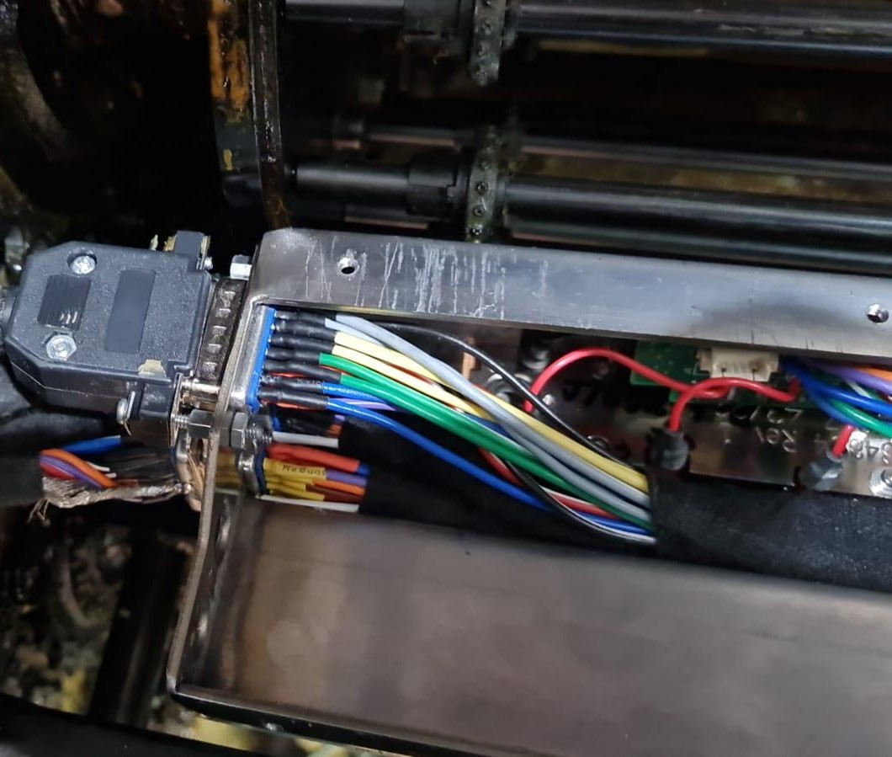
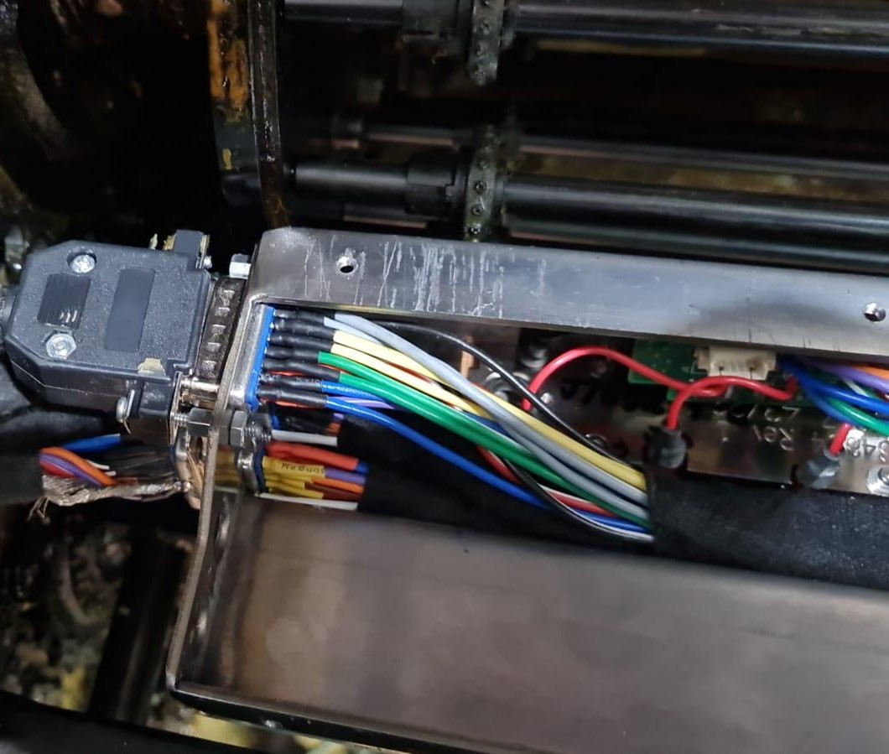
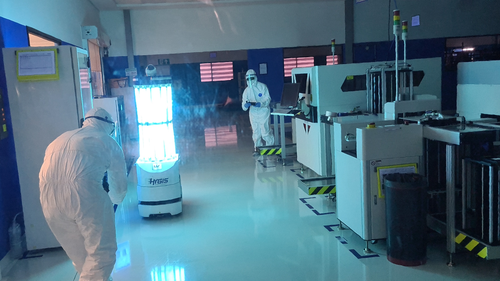
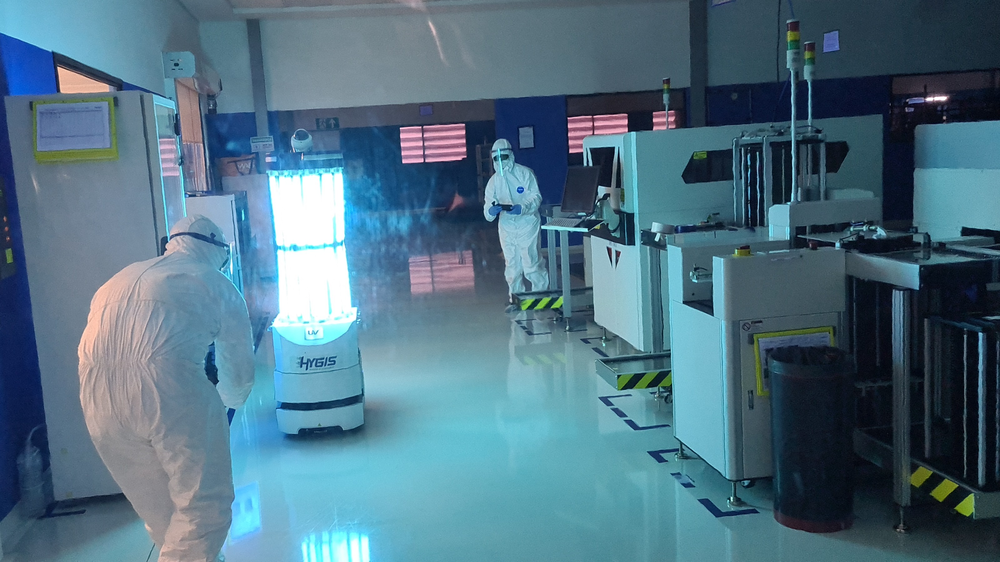
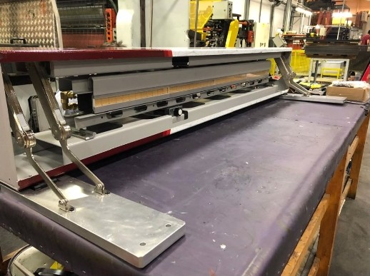
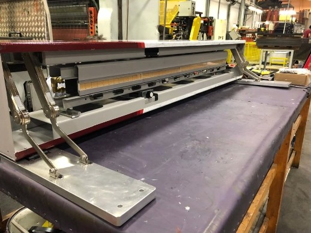
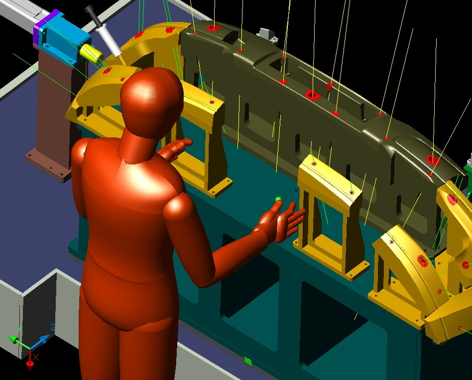
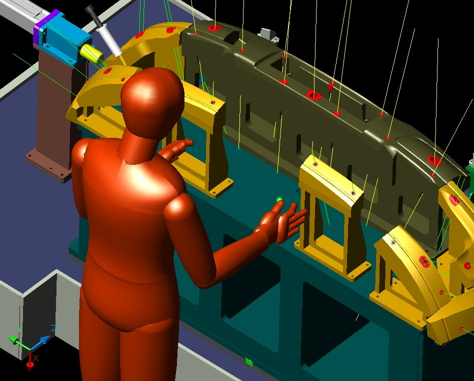

Compact UV Curing System for Offset Press (Packaging Automation)
The Challenge: Integrate a powerful UV curing system into a high-speed offset printing press (relevant to packaging sector), a task made incredibly difficult by an extremely constrained physical space and the requirement to operate within a 2mm tolerance of fast-moving machine components.
My Leadership & Contribution: As a hands-on leader, I engineered a solution from first principles. I used 3D printing to rapidly prototype and test several iterations of a custom, ultra-compact, water-cooled LED module housing. I also designed and fabricated bespoke hydraulic connections to fit the tight space. This process of hands-on iteration and custom fabrication was the key to delivering a functional system that solved a critical production bottleneck for the client, demonstrating my ability to turn bold ideas into reliable machines under tight deadlines and integrate precision components in highly constrained mechanical environments.


 



 



 



 
